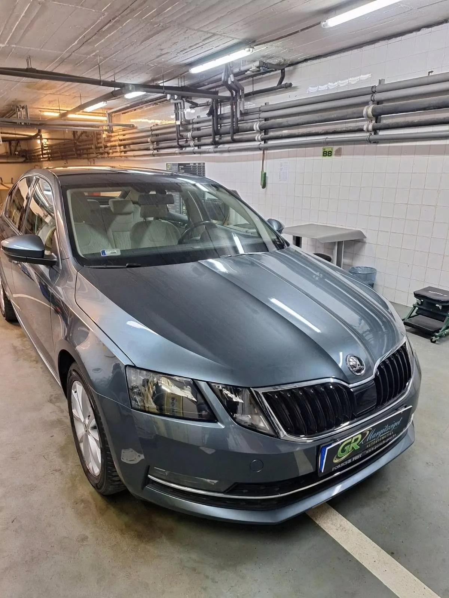
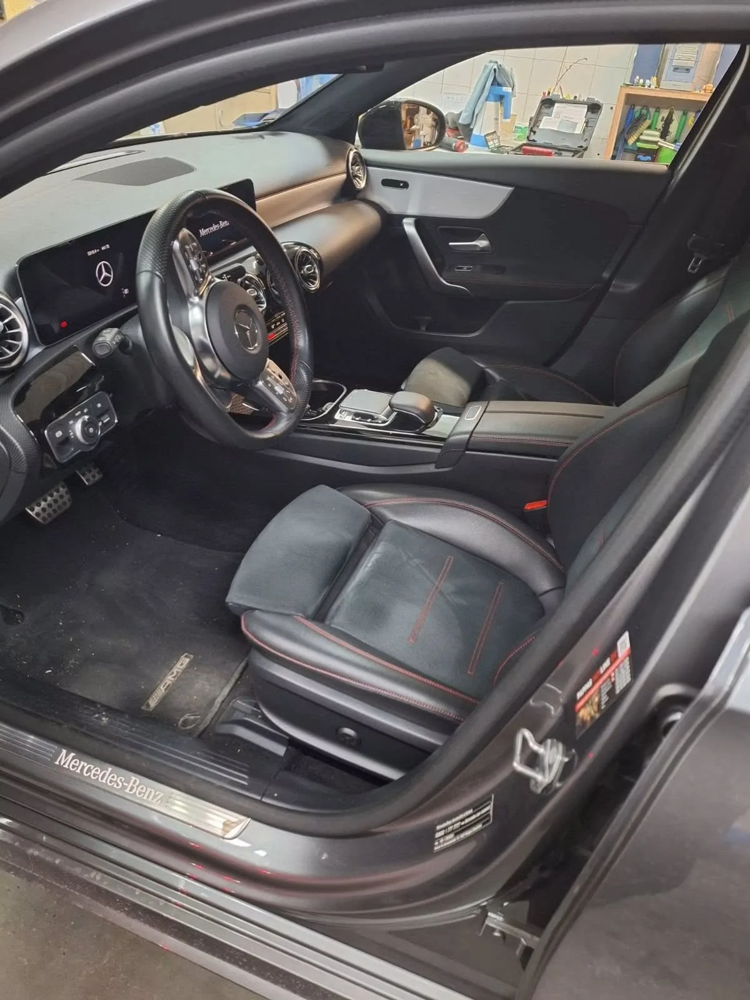
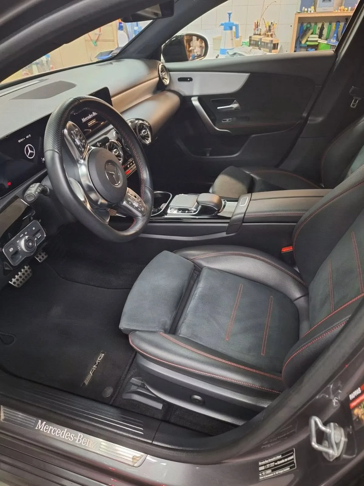
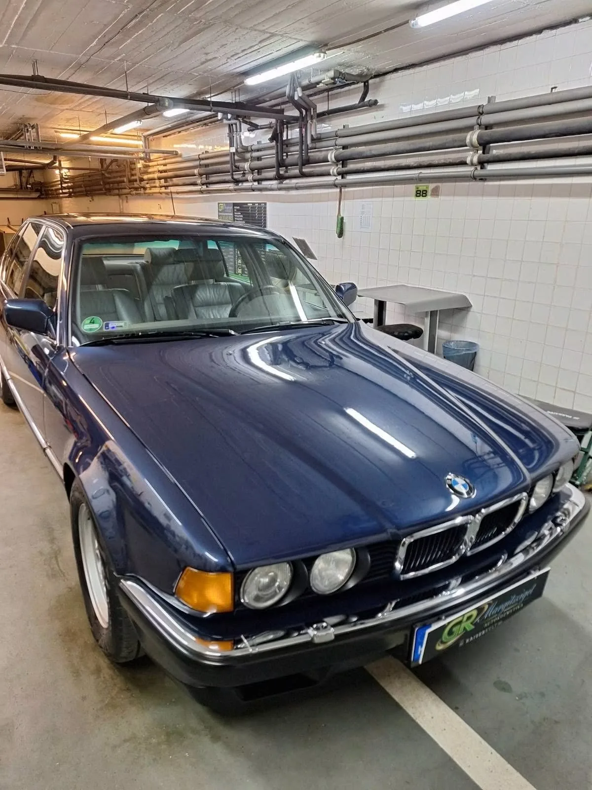
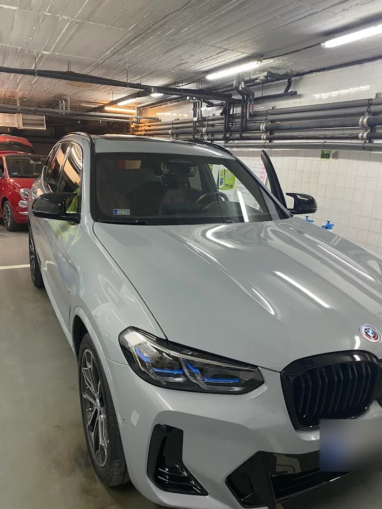

Munkáink
Előtte és utána
Valódi autók, valódi munkák, a mi mélygarázsunkban fotózva. Húzza el a csúszkát a képeken.


ElőtteUtánaŠkoda OctaviaKülső tisztítás és wax


ElőtteUtánaMercedes A-osztályBelső takarítás, szőnyeg és ülés
Galéria
Frissen elkészült autók
A legfrissebb munkáinkat a Facebook-oldalunkon is megtalálja.

